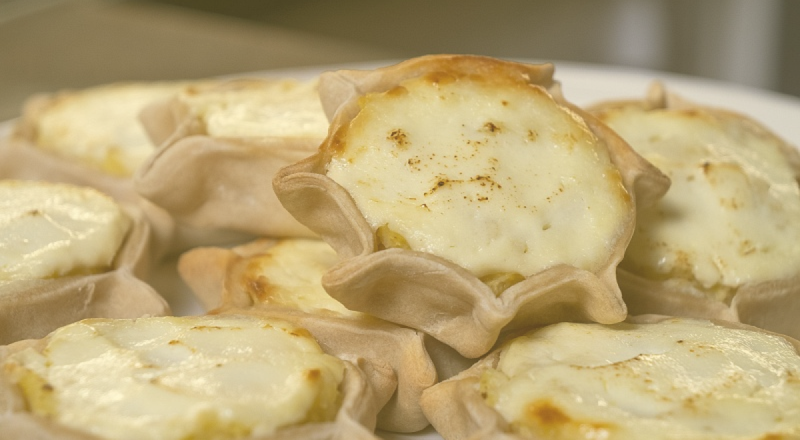

Карельские калитки
Приготовление
Шаг 1
Замесите тесто из закваски, воды, соли и муки. Хорошо вымесите. Положите в холодильник на полчаса.
Шаг 2
Приготовьте картофельное пюре: отварите картофель, разомните толкушкой, добавьте соль, сливочное масло и теплое молоко.
Шаг 3
От теста отщипните шарики размером примерно с грецкий орех, тонко раскатайте, положите начинку в центр, оставив 1 см с краю, края защипните, делая бортики.
Шаг 4
Смажьте смесью яйца и сметаны и отправьте в разогретую до 180°C духовку на 40 минут. Готовые калитки смажьте сливочным маслом.
Ингредиенты
- Ржаная хлебная закваска150 г
- Вода100 г
- Ржаная мука150 г
- Пшеничная мука хлебопекарная100 г
- Соль1 г
- Картошка8 шт
- Молоко200 г
- Куриное яйцо1 шт
- Сметана25 г
- Сливочное маслопо вкусу